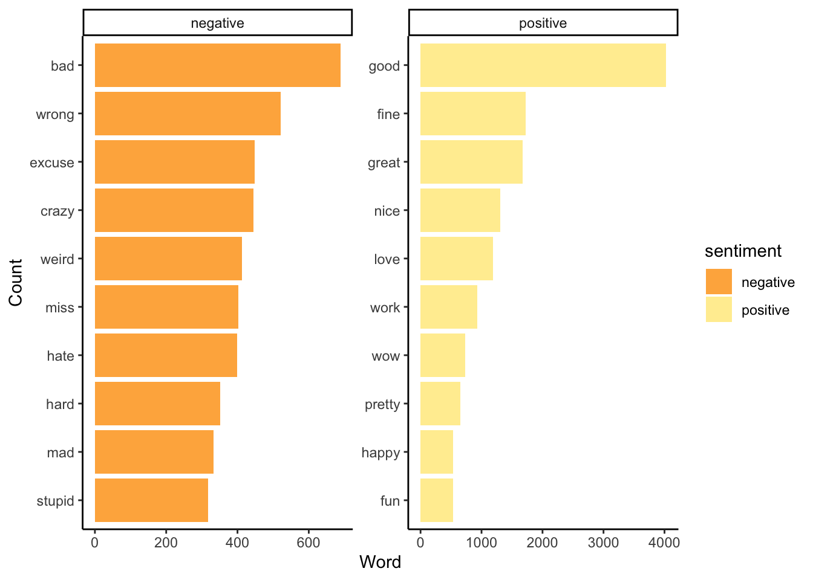
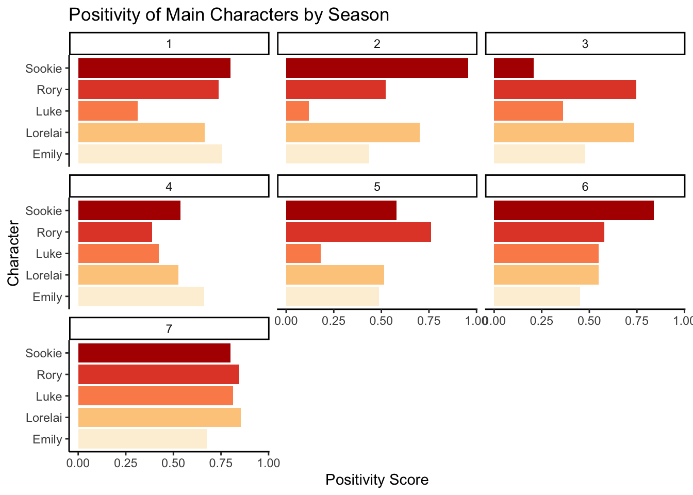
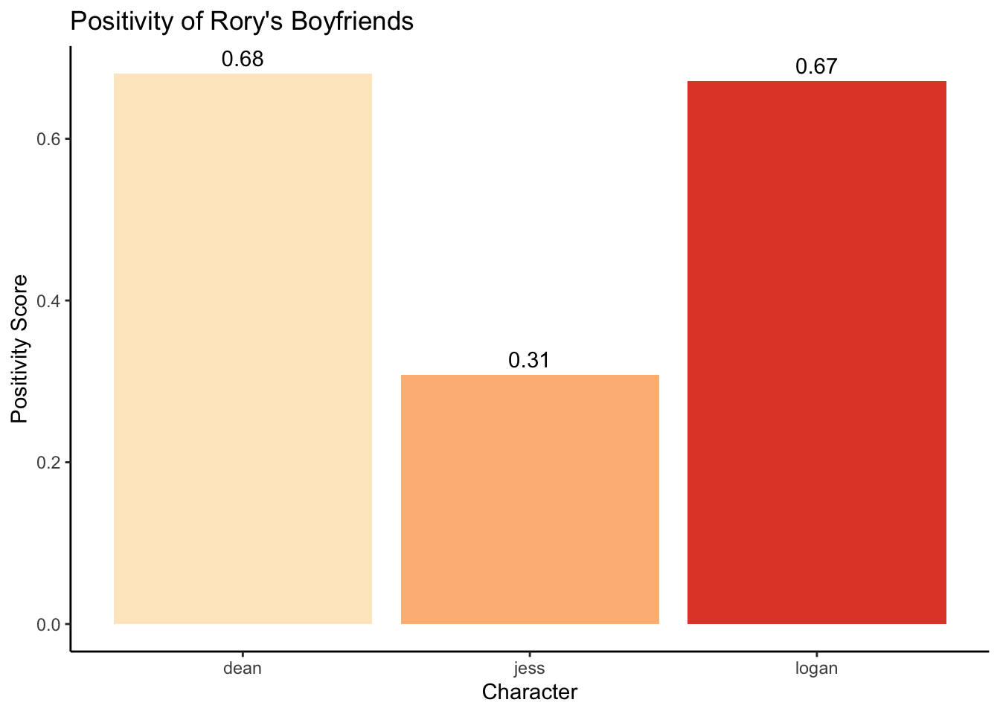

gilmore_girls_clean <- gilmore_girls |>
mutate(line = str_to_lower(Line), #first str_function
character = str_to_lower(Character),
character = str_replace_all(character, "/", " ")) |> #second str_function, first regular expression ("/")
select(-Character, -Line, -`...1`) |>
rename(season = Season) |>
unnest_tokens(word, line, token = "words") #makes each word its own row04 Mini Project
Introduction
This project uses data on the beloved 2000s sitcom (and my personal favorite TV show), Gilmore Girls. This data set, found on Kaggle and accessed here, contains the full script from all seven seasons of the show.
First, I clean the data, making a few different data frames for different text analysis purposes. To do so, I make use of multiple str_ functions: str_to_lower, str_view, str_replace_all, and str_to_title.
Then, I use the bing sentiment application to analyze the positivity of the show as a whole. After removing the character names and stop words, I found the 10 most used positive words and the 10 most used negative words. Interestingly, positive words were used much more frequently than negative words, providing insight into the attitude of the show.
Next, I used a similar application, the afinn application, to analyze the positivity of the five main characters in the show for each season. Generally, Luke tends to be the most negative character, whereas Sookie tends to be one of the most positive characters. From this analysis, we can also see how characters shift in positivity levels from season to season. I also used the data to make a word cloud of the 100 most commonly used words in the show. The word cloud demonstrates the casual language used by the characters and displays some Gilmore Girl classics like “coffee”, “mother”, and “Yale”.
Finally, I wanted to run a text analysis to help further the contentious, and VERY serious, debate on which of Rory’s boyfriends was the best. First, I used the str_count function to count how many times Rory mentioned each of their names, perhaps indicating the length and importance of each relationship. Then, I plotted the mean positivity score (using the afinn application) for each boyfriend, providing evidence for which of them was the best fit. Was Dean the nicest? Did Logan treat Rory right? Was Jess all bad, or did he have a kind side? This plot will help answer some of these persisting questions.
Data Cleaning
str_view(gilmore_names\(character, "^.*/.*\)“) #ensure the str_replace_all worked, third str_function, second regular expression (”^./.$“) (Removed from R chunch to render.)
gilmore_names <- gilmore_girls_clean |>
select(-word, -season) |>
distinct(character) #makes a list of all character names from the script (includes extras with lines)
gilmore_no_names <- gilmore_girls_clean |>
anti_join(gilmore_names, by = c("word" = "character")) gilmore_main_characters <- gilmore_girls_clean |>
count(character) |>
arrange(desc(n)) |>
slice_max(n, n = 5) #makes a list of the main characters, determined by number of words spokensmart_stopwords <- get_stopwords(source = "smart")
gilmore_no_stop_names <- gilmore_no_names|>
anti_join(smart_stopwords) Joining with `by = join_by(word)`Positivity Analysis
The Show
Is Gilmore Girls truely a feel-good TV show, or does it have a dark side?
bing_sentiments <- get_sentiments(lexicon = "bing") #indicates positive/negative for each word
bing_gilmore <- gilmore_no_stop_names |>
inner_join(bing_sentiments) |>
count(sentiment, word, sort = TRUE) Joining with `by = join_by(word)`Warning in inner_join(gilmore_no_stop_names, bing_sentiments): Detected an unexpected many-to-many relationship between `x` and `y`.
ℹ Row 291827 of `x` matches multiple rows in `y`.
ℹ Row 2698 of `y` matches multiple rows in `x`.
ℹ If a many-to-many relationship is expected, set `relationship =
"many-to-many"` to silence this warning.bing_gilmore |>
group_by(sentiment) |>
summarize(count = sum(n))# A tibble: 2 × 2
sentiment count
<chr> <int>
1 negative 25515
2 positive 29184bing_gilmore|>
group_by(sentiment) |>
slice_max(n, n = 10) |> #10 most used positive and negative words
ungroup() |>
ggplot(aes(x = fct_reorder(word, n), y = n, fill = sentiment)) +
geom_col() +
coord_flip() +
facet_wrap(~ sentiment, scales = "free") +
labs(x = "Count",
y = "Word") +
scale_fill_brewer(palette = "YlOrRd", direction = -1) +
theme_classic()
The Characters
Is Emily the villain after all? Looks like Luke was the true downer!
afinn_sentiments <- get_sentiments(lexicon = "afinn") #gives each word a positivity score
gilmore_no_stop_names |>
inner_join(afinn_sentiments, relationship = "many-to-many") |>
semi_join(gilmore_main_characters) |> #takes only words from the main characters
mutate(character = str_to_title(character)) |> #fourth str_function
group_by(character, season) |>
summarize(mean_value = mean(value)) |>
ungroup() |>
ggplot(aes(x = character, y = mean_value, fill = character)) +
geom_col(show.legend = FALSE) +
facet_wrap(~season) +
coord_flip() +
scale_fill_brewer(palette = "OrRd") + #Fall color palette
theme_classic() +
labs(title = "Positivity of Main Characters by Season",
y = "Positivity Score",
x = "Character")Joining with `by = join_by(word)`
Joining with `by = join_by(character)`
`summarise()` has grouped output by 'character'. You can override using the
`.groups` argument.
Word Cloud
Gilmore Girls is known for its witty characters, but what words do they actually frequent? Yeah, it looks like this word cloud will help us figure this out!
gilmore_words <- gilmore_no_stop_names |>
count(word) |>
arrange(desc(n)) |>
anti_join(stop_words)Joining with `by = join_by(word)`gilmore_words_df <- gilmore_words |>
slice_head(n = 100) |>
data.frame()
wordcloud2(
gilmore_words_df,
size = 1,
shape = 'circle',
minSize = .5,
color = "random-dark"
)Boyfriend Analysis
Boyfriend Mentions
Did Rory have a favorite the whole time? Was she more excited to talk about one boyfriend compared to the others? It looks like Dean and Logan are separating themselves in the competition for best boyfriend!
gilmore_girls_clean |>
filter(character == "rory") |>
summarize(jess_mentions = sum(str_count(word, "^jess")), #fifth str_function, thrid regular expression
logan_mentions = sum(str_count(word, "^logan")),
dean_mentions = sum(str_count(word, "^dean")))# A tibble: 1 × 3
jess_mentions logan_mentions dean_mentions
<int> <int> <int>
1 147 283 311Positivity of Boyfriends
Rory might have mention one boyfriend more than the others, but what about how they treated her? Dean and Logan continue to be great contenders for the title of Rory’s best boyfriend. Unfortunately, the results of this affin text analysis do not point to a decisive winner. Jess needs some defending, but it looks like the debate will continue.
gilmore_no_stop_names |>
inner_join(afinn_sentiments, relationship = "many-to-many") |>
filter(character == c("jess", "dean", "logan")) |> #takes only words from rory's boyfriends
group_by(character) |>
summarize(mean_value = mean(value)) |>
ungroup() |>
ggplot(aes(x = character, y = mean_value, fill = character)) +
geom_col(show.legend = FALSE) +
geom_text(aes(label = round(mean_value, 2)), vjust = -.5) +
scale_fill_brewer(palette = "OrRd") +
theme_classic() +
labs(title = "Positivity of Rory's Boyfriends",
y = "Positivity Score",
x = "Character") Joining with `by = join_by(word)`